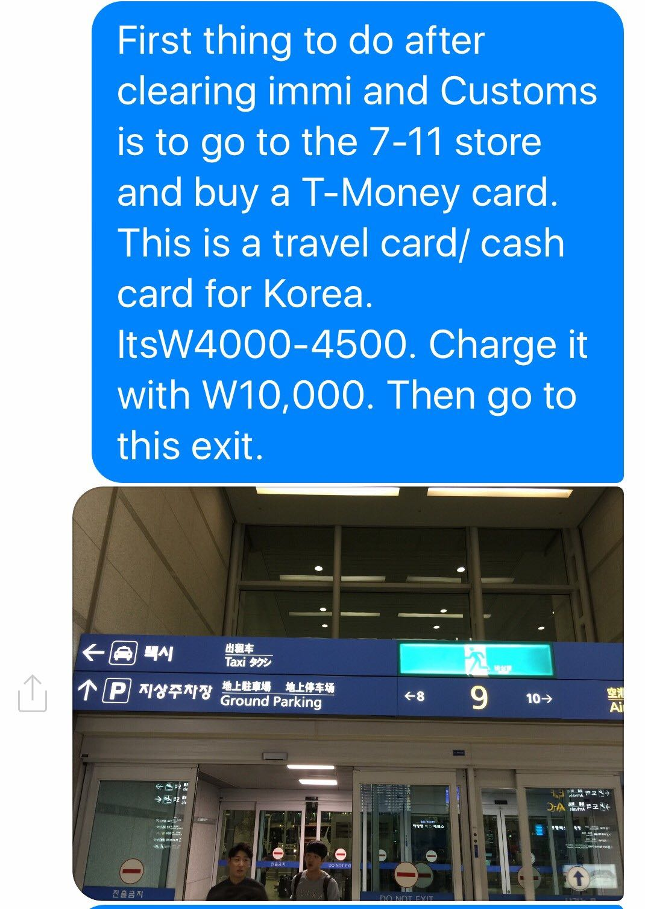
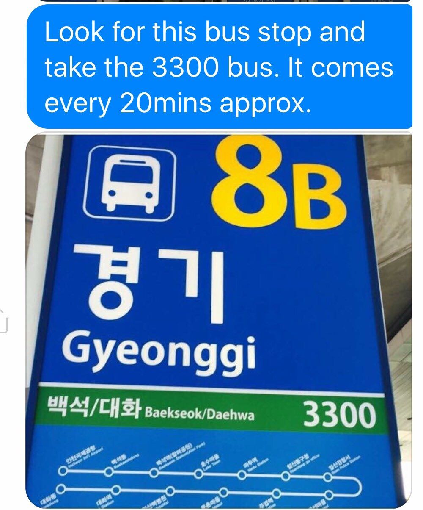
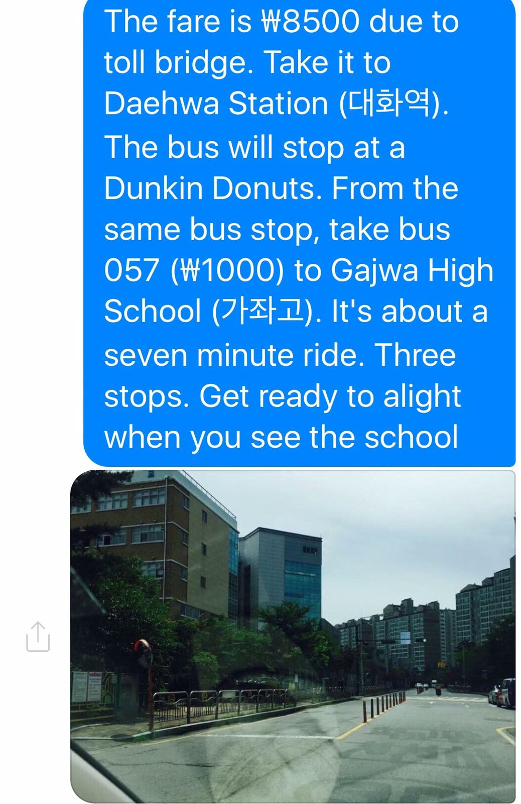
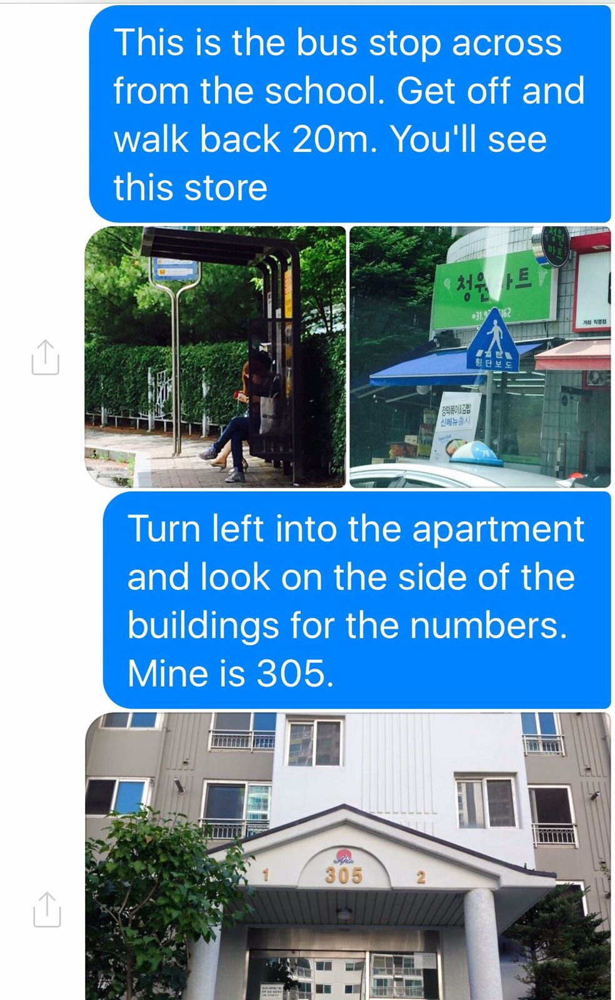
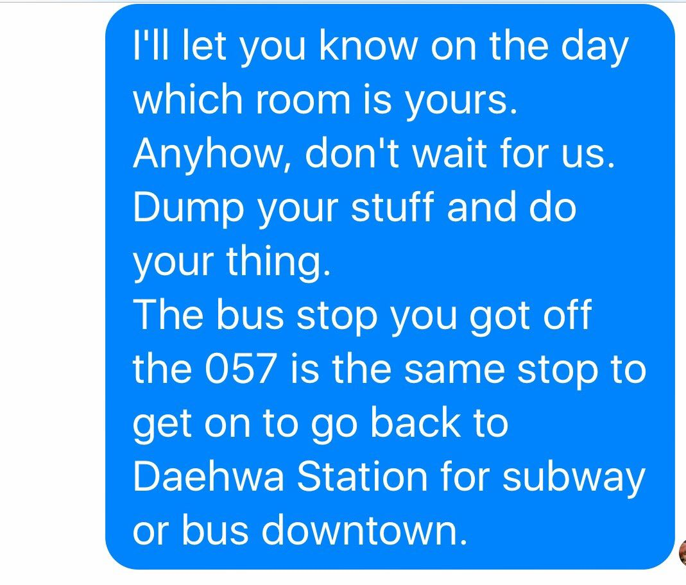

Getting to Byucksan Apt 305-402, Gajwa 2ro 53, Ilsan Seo Gu, Goyang City
- Step1: Land S. Korea :)
- After immi. clearance, Get T-Money card (W4000, 4500) from 7-11 store, and charge W10,000. Then go to exit
- Find Gyeonggi ( 경기 ) bus stop and take bus 3300, it costs W8500.
- Get off at Daehwa station ( 대화 ), you'll see Dunkin Donuts there.
- From same Daehwa station take bus 057 ( costs W1000 ) to Gajwa High School ( 가 좌 고 ). This is about seven minutes ride and three stops.
- Get off at the school station and walk back 20 meters.
- Look for the apartment building number 305.
- Use the security code ... to open glass door on first floor
- Goto apt 402, slide up the lock and enter code ... Voila... Mission accomplished :)





